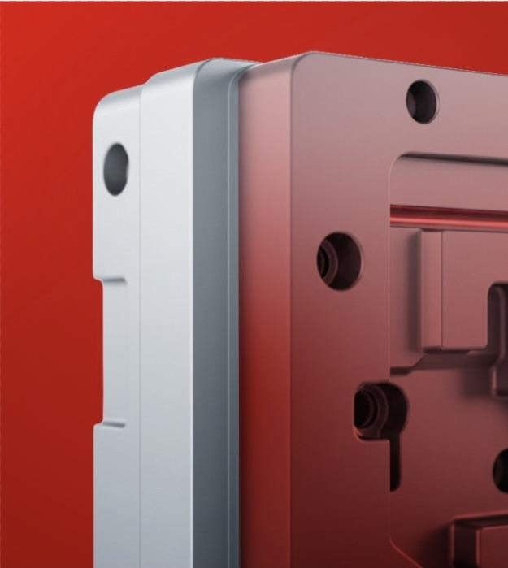

Desarrollo de
matrices industriales
Diseñamos y asesoramos el desarrollo de matrices para procesos productivos de alta exigencia,
aplicando criterio técnico y una visión integral que garantiza precisión, repetibilidad y
confiabilidad en cada etapa
del proyecto.